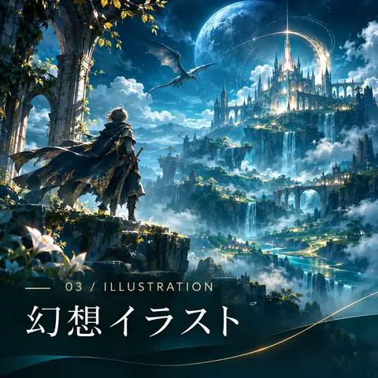
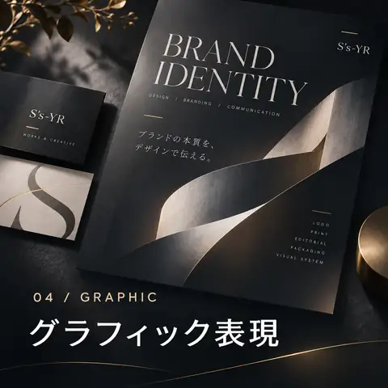
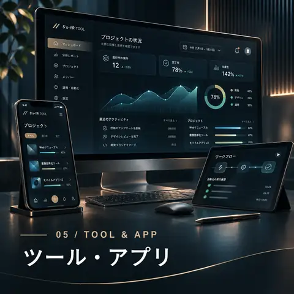

工事・施工、業務支援からAIイラスト・動画、ツール・アプリ制作まで。写真・イラスト・映像を交えて紹介します。
工場内の設備・営繕から住宅・店舗の改修工事まで。
現場の運用や人材・求人、施設管理を支援。
イラスト・動画から実際に使うツールまで。



※ 写真は施工イメージ素材です。S's-YRの施工実績写真ではありません。イラスト・グラフィック・アプリ画面・映像編集の画像はAI制作のコンセプトサンプルです。写真素材提供：Unsplash。
溶接と住宅・店舗の施工、工場の現場応援と施設清掃。後半では、AIイラスト、広告、業務アプリ、動画編集の制作例をご覧いただけます。
23秒・無音
溶接・建築は参考映像を使用しています。現場支援・清掃はアニメーション、デジタル制作は作品サンプルです。映像素材 溶接・建築（Pexels）
施工・業務支援・AI制作に関するご相談はこちら。お問い合わせだけでも受け付けています。